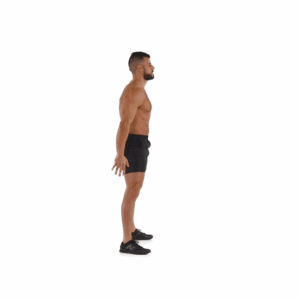

Prueba de Tren Inferior
2. Sentadillas
Una sentadilla es un ejercicio físico que se lleva a cabo para desarrollar los músculos y fortalecer los tendones y los ligamentos de las piernas. También permite tonificar los glúteos y aporta beneficios a la cadera. ¿Estás listo para la prueba?, VAMOS...
